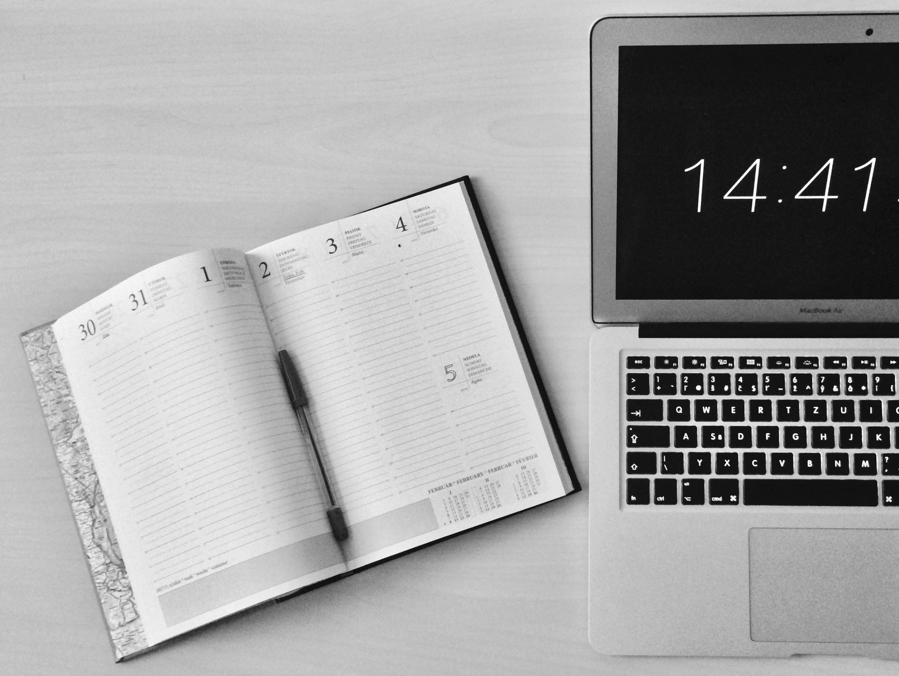

The First Watch in the World
The Watch 1505 is the world's first watch. It was crafted by the German inventor, locksmith and watchmaker Peter Henlein from Nuremberg, during the year 1505, in the early German Renaissance period, as part of the Northern Renaissance. However, other German clockmakers were creating miniature timepieces during this period, and there is no definite evidence Henlein was the first. It is the oldest watch in the world that still works. The watch is a small fire-gilded copper sphere, an oriental pomander, and combines German engineering with Oriental influences. In 1987, the watch reappeared at an antiques and flea market in London. The initial price estimation for this watch is between 50 and 80 million dollars (May 2014).

When is the Best Time to Study
If you are a student, studying is part and parcel of your life. It takes patience and practice to establish the best time for you to study. For some people, mornings are better1 for studying, while for others, evening or night time enables to focus better on their studies. According to the science of “good timing” – also known as chronobiology2 – peak performance is hardwired into our DNA. Our biological clock, which is an inner clock embedded inside our brain since young, actually helps us decide when is our perfect timing for studying. Although new discoveries prove that timing may not be everything, it is important if you want to create and perform at your best consistently.That said, science has indicated that learning is most effective between 10 am to 2 pm and from 4 pm to 10 pm, when the brain is in an acquisition mode. On the other hand, the least effective learning time is between 4 am and 7 am.
Time Zone
A time zone is an area which observes a uniform standard time for legal, commercial and social purposes. Time zones tend to follow the boundaries between countries and their subdivisions instead of strictly following longitude, because it is convenient for areas in frequent communication to keep the same time. All time zones are defined as offsets from Coordinated Universal Time (UTC), ranging from UTC−12:00 to UTC+14:00. The offsets are usually a whole number of hours, but a few zones are offset by an additional 30 or 45 minutes, such as in India, South Australia and Nepal. Some areas of higher latitude use daylight saving time for about half of the year, typically by adding one hour to local time during spring and summer.
Alarm Clock - History
The first American alarm clock was created in 1787 by Levi Hutchins in Concord, New Hampshire. This device he made only for himself however, and it only rang at 4 am, in order to wake him for his job. The French inventor Antoine Redier was the first to patent an adjustable mechanical alarm clock, in 1847. Alarm clocks, like almost all other consumer goods in the United States, ceased production in the spring of 1942, as the factories which made them were converted over to war work during World War II, but they were one of the first consumer items to resume manufacture for civilian use, in November 1944. By that time, a critical shortage of alarm clocks had developed due to older clocks wearing out or breaking down. Workers were late for, or missed completely, their scheduled shifts in jobs critical to the war effort.[14] In a pooling arrangement overseen by the Office of Price Administration, several clock companies were allowed to start producing new clocks, some of which were continuations of pre-war designs, and some of which were new designs, thus becoming among the first "postwar" consumer goods to be made, before the war had even ended. The price of these "emergency" clocks was, however, still strictly regulated by the Office of Price Administration
Big Ben Clock
Big Ben is the nickname for the Great Bell of the striking clock at the north end of the Palace of Westminster in London, England, and the name is frequently extended to refer also to the clock and the clock tower. The official name of the tower in which Big Ben is located was originally the Clock Tower, but it was renamed Elizabeth Tower in 2012 to mark the Diamond Jubilee of Elizabeth II. The tower was designed by Augustus Pugin in a neo-Gothic style. When completed in 1859, its clock was the largest and most accurate four-faced striking and chiming clock in the world. The tower stands 316 feet (96 m) tall, and the climb from ground level to the belfry is 334 steps. Its base is square, measuring 40 feet (12 m) on each side. Dials of the clock are 22.5 feet (6.9 m) in diameter. All four nations of the UK are represented on the tower on shields featuring a rose for England, thistle for Scotland, shamrock for Ireland, and leek for Wales. On 31 May 2009, celebrations were held to mark the tower's 150th anniversary. Big Ben is the largest of the tower's five bells and weighs 13.5 long tons (13.7 tonnes; 15.1 short tons).[1] It was the largest bell in the United Kingdom for 23 years. The origin of the bell's nickname is open to question; it may be named after Sir Benjamin Hall, who oversaw its installation, or heavyweight boxing champion Benjamin Caunt. Four quarter bells chime at 15, 30 and 45 minutes past the hour and just before Big Ben tolls on the hour. The clock uses its original Victorian mechanism, but an electric motor can be used as a backup.
Time Travel
Time travel is the concept of movement between certain points in time, analogous to movement between different points in space by an object or a person, typically with the use of a hypothetical device known as a time machine. Time travel is a widely recognized concept in philosophy and fiction, particularly science fiction. The idea of a time machine was popularized by H. G. Wells' 1895 novel The Time Machine. It is uncertain if time travel to the past is physically possible, and such travel, if at all feasible, may give rise to questions of causality. Forward time travel, outside the usual sense of the perception of time, is an extensively observed phenomenon and well-understood within the framework of special relativity and general relativity. However, making one body advance or delay more than a few milliseconds compared to another body is not feasible with current technology. As for backward time travel, it is possible to find solutions in general relativity that allow for it, such as a rotating black hole. Traveling to an arbitrary point in spacetime has very limited support in theoretical physics, and is usually connected only with quantum mechanics or wormholes.